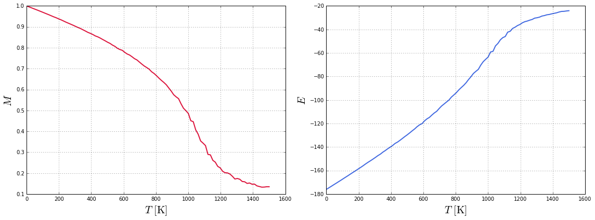
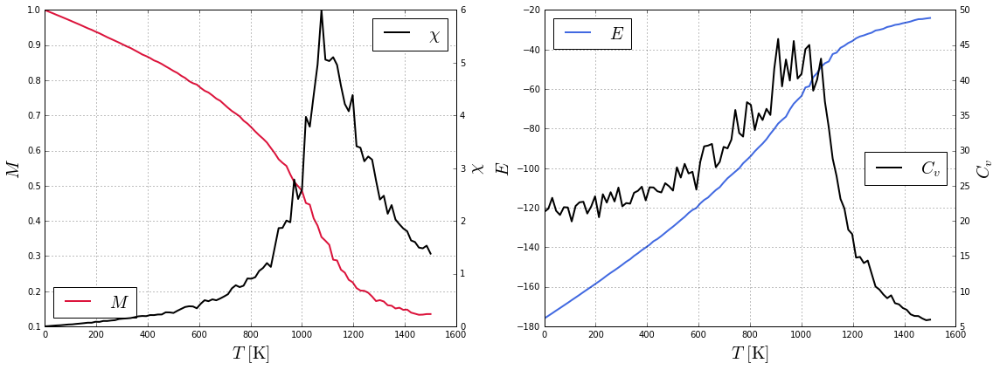
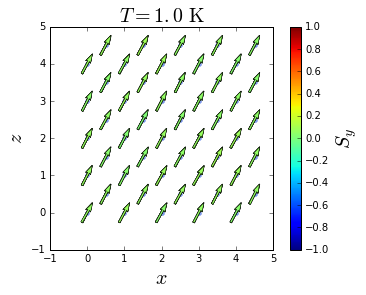

Thermal properties of a bulk system
In this tutorial, we explain how to simulate thermal behavior of a bulk system.
The system in consideration is a Fe bulk with BCC structure. Nearest neighbors exchange interactions and cubic anisotropy were considered. To describe the ferromagnetic behavior of Fe, the following parameters were used:
where , , and are the nearest neighbor exchange interaction constant, anisotropy constant, spin moment and atomic magnetic moment, respectively.
The simulation is carried out cooling down the Fe bulk from a high to a low temperature. Plots of the magnetization, energy, susceptibility and specific heat are extracted from the simulation results. Furthermore, graphics of magnetization states at different temperatures are produced.
Simulation
As explained in the simulation section, four input files with established formats are used perform a simulation:
- Configuration file (config.json): These simulation parameters are set to cool down the bulk system from to K without presence of external magnetic field. Units are coherent with the units used in the system building. Then,
kbis given in meV/K,fieldin T andtemperaturein K. The content of the configuration file is shown below:
{
"sample": "sample.dat",
"anisotropy": "anisotropy.dat",
"out": "results.h5",
"kb": 0.08618,
"mcs": 10000,
"seed": 5681401,
"field": 0.0,
"temperature": {
"start": 1500.0,
"final": 1.0,
"points": 100
}
}
- Sample file (sample.dat): This file corresponds to a Fe bulk with BCC structure, periodic boundary conditions and an edge length of muc. The name of this file must match the filename in the path of the
sampleattribute in the configuration file. The construction of this file can be found in the Building a bulk system tutorial. - Anisotropy file (anisotropy.dat): Cubic anisotropy is considered. The name of this file must match the filename in the path of the “anisotropy” attribute in the configuration file. The construction of this file can be found in the Building a bulk system tutorial.
- Initial state file: In this simulation the system is initialized with a random state; therefore, no initial state file is required.
With all the files placed in the same folder, open a terminal, change directory to the folder and type ls. The next list should appear:
anisotropy.dat config.json sample.dat
Then, we can start the simulation by executing:
vegas config.json
A message like this should appear:

Once the simulation is completed, an output file (results.h5) with a size of MB is generated. This file contains all the history of the simulation, from where the magnetic properties of the system can be extracted and analyzed.
Data analysis
The next python script is created to produce plots of the temperature dependence of the magnetization, susceptibility, specific heat and internal energy of the system, and finally, the time evolution of the magnetic moments.
Import the required libraries:
- numpy handles numeric arrays and mathematical operations.
- pyplot provides a MATLAB-like plotting framework.
- h5py provides both a high- and low-level interface to the HDF5 library.
import numpy
from matplotlib import pyplot
import h5py
Load the output file into a structure called dataset.
dataset = h5py.File("results.h5", mode="r")
print(dataset)
<HDF5 file "results.h5" (mode r)>
If we cast the structure dataset, the set of variables in the output file is printed, as observed with HDFView.
print(list(dataset))
['Fe_x', 'Fe_y', 'Fe_z', 'energy', 'field', 'finalstates', 'magnetization_x', 'magnetization_y', 'magnetization_z', 'positions', 'temperature', 'types']
The magnetization is stored by type and spatial components. Fe_x, Fe_y and Fe_z are the magnetization of sites of type Fe in the x, y and z direction, respectively. In this case, these values are equal to the spatial components of the total magnetization, magnetization_x, magnetization_y and magnetization_z, because there is just an ion type.
It is possible to retrieve each variable using the method get, which, if printed, shows the dimension (shape) of the variable.
print(dataset.get("Fe_x"))
<HDF5 dataset "Fe_x": shape (100, 10000), type "<f8">
The dimension of magnetization and energy are (points, MCS), where points are the number of temperature/magnetic field pairs and MCS is the number of Monte Carlo steps. Therefore, the dimension of temperature and field is (, ).
print(dataset.get("temperature"))
print(dataset.get("field"))
<HDF5 dataset "temperature": shape (100,), type "<f8">
<HDF5 dataset "field": shape (100,), type "<f8">
Handling these variables as numpy arrays facilitates the calculations. Also, using the method attrs the attributes of the dataset can be retrieved, which in this case are mcs (number of Monte Carlo steps), seed (random number seed) and kb (Boltzmann constant).
print(dataset.attrs)
print(list(dataset.attrs))
<Attributes of HDF5 object at 139710318743128>
['mcs', 'seed', 'kb']
mcs = dataset.attrs["mcs"]
seed = dataset.attrs["seed"]
kb = dataset.attrs["kb"]
print(mcs, seed, kb)
10000 5681401 0.08618
The number of ions can be obtained from the length of the variable positions, which stores the position of every site.
num_sites = len(dataset.get("positions"))
print(num_sites)
250
Load the variables of interest discarding half of the MCS to ensure equilibrium.
tau = mcs // 2
energy = dataset.get("energy")[:, tau:]
mag_x = dataset.get("magnetization_x")[:, tau:]
mag_y = dataset.get("magnetization_y")[:, tau:]
mag_z = dataset.get("magnetization_z")[:, tau:]
These variables has a dimension of (100, 5000).
print(energy.shape)
print(mag_x.shape)
print(mag_y.shape)
print(mag_z.shape)
(100, 5000)
(100, 5000)
(100, 5000)
(100, 5000)
Compute the total magnetization.
mag = numpy.linalg.norm(numpy.array([mag_x, mag_y, mag_z]), axis=0)
print(mag.shape)
(100, 5000)
Compute the mean values normalized by the number of sites.
energy_mean = numpy.mean(energy, axis=1) / num_sites
mag_mean = numpy.mean(mag, axis=1) / num_sites
Load the variable temperature.
temperature = dataset.get("temperature")[:]
Plot the total magnetization and energy as function of temperature.
fig = pyplot.figure(figsize=(16, 6))
ax1 = fig.add_subplot(121)
ax1.plot(temperature, mag_mean, lw=2, color="crimson")
ax1.set_xlabel(r"$T \ \rm [K]$", fontsize=20)
ax1.set_ylabel(r"$M$", fontsize=20)
ax1.grid()
ax2 = fig.add_subplot(122)
ax2.plot(temperature, energy_mean, lw=2, color="royalblue")
ax2.set_xlabel(r"$T \ \rm [K]$", fontsize=20)
ax2.set_ylabel(r"$E$", fontsize=20)
ax2.grid()
pyplot.tight_layout()
pyplot.show()

The susceptibility and specific heat can be computed according to:
and
where is the variance.
Cv = numpy.std(energy, axis=1)**2 / (kb * temperature**2)
X = numpy.std(mag, axis=1)**2 / (kb * temperature)
fig = pyplot.figure(figsize=(16, 6))
ax1 = fig.add_subplot(121)
ax3 = ax1.twinx()
ax1.plot(temperature, mag_mean, lw=2, color="crimson", label=r"$M$")
ax3.plot(temperature, X, lw=2, color="black", label=r"$\chi$")
ax1.set_xlabel(r"$T \ \rm [K]$", fontsize=20)
ax1.set_ylabel(r"$M$", fontsize=20)
ax3.set_ylabel(r"$\chi$", fontsize=20)
ax1.grid()
ax1.legend(loc=3, fontsize=20)
ax3.legend(loc=1, fontsize=20)
ax2 = fig.add_subplot(122)
ax4 = ax2.twinx()
ax2.plot(temperature, energy_mean, lw=2, color="royalblue", label=r"$E$")
ax4.plot(temperature, Cv, lw=2, color="black", label=r"$C_v$")
ax2.set_xlabel(r"$T \ \rm [K]$", fontsize=20)
ax2.set_ylabel(r"$E$", fontsize=20)
ax4.set_ylabel(r"$C_v$", fontsize=20)
ax2.grid()
ax2.legend(loc=2, fontsize=20)
ax4.legend(loc=5, fontsize=20)
pyplot.tight_layout()
pyplot.show()

The phase transition is close to , which is close to the Curie temperature of Fe ( K).
Finally, in order to visualize the temperature evolution of the magnetic moments, load the variable finalstates.
finalstates = dataset.get("finalstates")[:]
positions = dataset.get("positions")[:]
print(finalstates.shape)
print(positions.shape)
(100, 250, 3)
(250, 3)
The dimension of finalstates is (, , ), which corresponds to (points, num_sites, ), where points is the number of temperature/magnetic field pairs, num_sites is the number of sites and is the number of spatial components , and . In a similar way, positions has a dimension of (, ), which corresponds to (num_sites, ).
Visualize the projection of the final state at the last value of temperature ( K).
ind = -1
pyplot.figure()
pyplot.scatter(positions[:, 0], positions[:, 2], lw=0, color="royalblue", alpha=0.2)
quivers = pyplot.quiver(positions[:, 0], positions[:, 2],
finalstates[ind, :, 0], finalstates[ind, :, 2], finalstates[ind, :, 1],
pivot="middle", width=0.008, scale=10, lw=0.5, clim=(-1, 1))
cb = pyplot.colorbar(quivers)
cb.set_label(r"$S_y$", fontsize=20)
pyplot.xlabel(r"$x$", fontsize=20)
pyplot.ylabel(r"$z$", fontsize=20)
pyplot.title(r"$T = %.1f \ \rm K$" % temperature[ind], fontsize=20)
pyplot.gca().set_aspect("equal")
pyplot.show()
